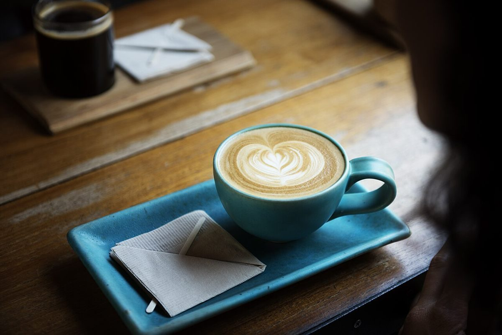

ベーカリー併設のカフェ / 茨城県鹿嶋市
Bakery & CafeSOLA
茨城県鹿嶋市のベーカリー併設カフェ「Bakery & Cafe SOLA」のご案内ページです。営業時間やメニューなど詳しいことは準備中。まずはInstagramをのぞいてみてください。

制作側の連想
「SOLA」から、さやの中の四粒。
制作側は「SOLA(ソラ)」という響きから、そら豆(空豆)を連想しました。空に向かって伸びるさやの中に、豆がひとつずつ並ぶ姿です。SOLAは4文字なので、S・O・L・Aをさやの四粒に見立てて、このサイトを組み立てています。これは制作側の言葉あそびで、お店の理念・屋号の由来・特徴とは一切関係がありません。
さやの四粒(言葉あそび)
S・O・L・A
写真は鹿嶋市のお店のものではなく、国外または撮影地不明のフリー素材です。お店で提供しているものを示すものでもありません。
- SSlice切り分けたパンのイメージ

フリー素材のイメージ - ORound丸いパンのイメージ

フリー素材のイメージ - LLong細長いパンのイメージ

フリー素材のイメージ - AAromaカフェの香りのイメージ

フリー素材のイメージ